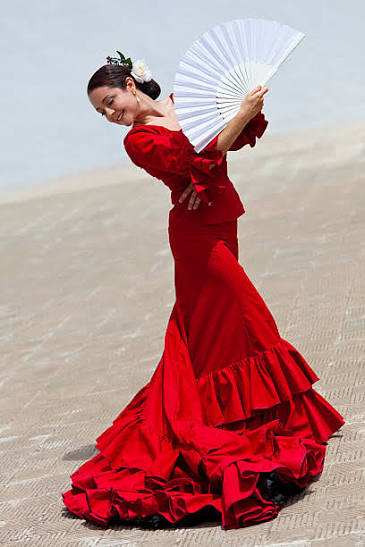

Danças Tradicionais da Espanha
Flamenco
Essa é a dança espanhola mais famosa no mundo. Ela carrega influências da
cultura cigana, moura e judia e utiliza as castanholas como parte do espetáculo,
acompanhadas de instrumentos de percussão. Os passos são rápidos, técnicos e sensuais,
com muitos giros em torno do próprio eixo, pisadas e movimentos de braços. As dançarinas
utilizam vestidos cheios, rodados, longos e elegantes.

Castanhola
As castanholas são um símbolo da cultura espanhola e referem-se tanto ao instrumento
de percussão quanto ao estilo de dança. A modalidade, semelhante ao flamenco,
utiliza movimentos de cabeça, tronco e pés, enquanto as mãos tocam as castanholas no ritmo da música.

Fandango
O fandango é uma dança espanhola muito conhecida no Brasil,
principalmente na região sul. O ritmo tem como principal característica os movimentos rápidos
e elaborados, que mesclam passos de sapateado e pequenos saltos. É executado por casais
que se movem pelo espaço e seu figurino é muito similar ao do fandango gaúcho,
em que os homens vestem calças elegantes e as mulheres, saias longas e rodadas.